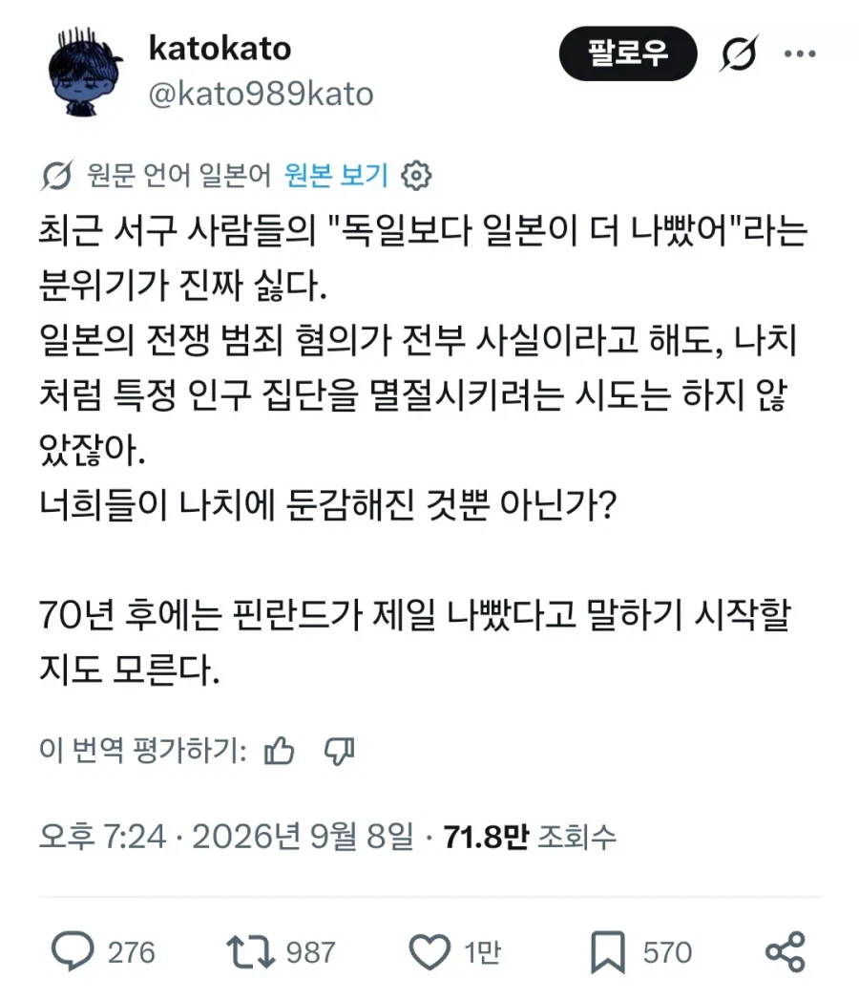
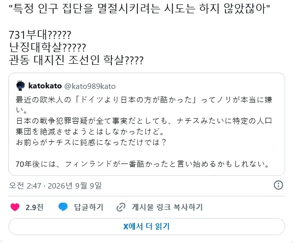

양심 존나 없네ㅋㅋㅋ


양심 존나 없네ㅋㅋㅋ
역사 똑바로 가르치지도 않는 개악질 씹새들이 ㅋㅋㅋㅋㅋㅋ
역사 교육도 개똥으로 처 받았고, 요즘 같이 찾아보면 다 나오는 시대에 찾아 볼 의지가 없는것도 개/세끼들이고
일본 밀로환초 조선인 학살(식인) 사건 읽으면 없던 분노도 갑자기 생기더라
공장식으로 최대한 효율적으로 민족 말살한건 인류역사상 처음이긴함
아가리
ㅋㅋ 전쟁포로 인육파티하는 새끼들이 할말인가 ㅋㅋ
나치가 악의제국이 된 결정적인건
국가단위로 인간 대량 살처분을 시스템화했다는것 때문임 말그대로 인간도살장을 공장식으로 굴려서 아직도 회자되는거지
일본극우새끼들 다 절멸하고 정한론자들이 없어지지않는이상 일본 꼬라지는 저기서 벗어나지못할거임
저런거보면 존나 얄밉게 재수없다니까
어디서 피해자코스프레야 씨발련들이
목자르기 경주하던 새끼들이
억지로 뚜껑 덮고 없던 일로 하자는 식으로 하고, 지들이 쳐 맞은 건 ㅠㅠ 이러면서 피해자 행세 하니까 더 악질이지 새끼야